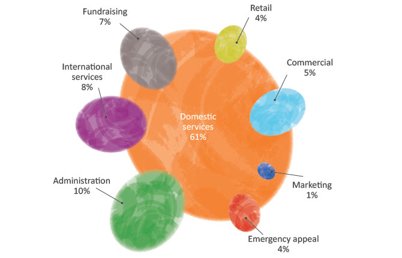
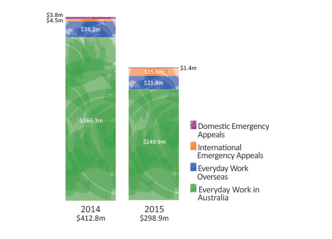
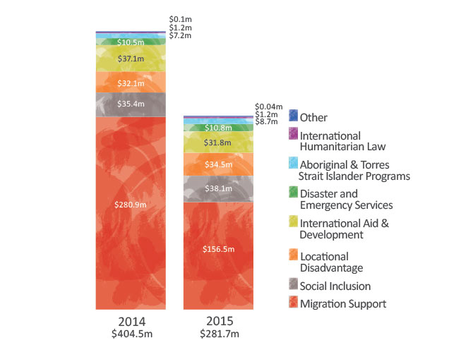

Expenditure on Humanitarian Services decreased 22% to $407.4 million. $298.9 million was directed to programs that support vulnerable people in Australia and overseas, meaning 73 cents in every dollar spent was directed towards delivering services and programs.
Fundraising costs represented 7% of total expenditure (5% in 2014) and include all expenditure associated with fundraising for everyday work, the administration of emergency appeals and managing pro bono work and non-cash gifts (that in accordance with organisational policy are not recognised in the financial accounts). Together these areas provide 65% of the society’s donation income. The cost of fundraising was 25% (27% in 2014); excluding income from disaster appeals it was 31% (32% in 2014).
Administration costs are 10% of total expenditure (7% in 2014) and include costs critical to the effective running of the Society such as information technology, finance, human resources and occupancy costs.
Our work in Australia and overseas
In 2015 over $298 million was spent delivering services, and responses to emergencies and disasters. 95% of this spend was on everyday (non-disaster appeal) work delivering programs to vulnerable people and communities throughout Australia and overseas. Of this, the majority (84% or over $249 million) was spent on domestic services and programs in Australia while almost $32 million was spent on everyday work overseas. The remaining 6% ($17 million) was spent responding to emergencies in Australia ($1.4 million) and overseas ($15.8 million).
Each year, expenditure on disasters and emergencies fluctuates, depending on their number and severity of impact. This year international emergency responses to Cyclone Pam in Vanuatu, and the Nepal earthquake accounted for the majority of spend on emergency appeals.

Program spend (excluding disaster appeals)
Program spend of $281.7 million was 31% down on 2014, largely driven by the $124.4 million decline in funding of migration support programs. Despite this decline, migration support programs still account for 56% of program spend on everyday work. Spend on international aid and development reduced $5.3 million (14%), whilst spending on Aboriginal and Torres Strait Islander programs, locational disadvantage and social inclusion increased (the latter by 8% to over $38 million).
Program activities within humanitarian services are defined according to priority areas. All funding opportunities are assessed through internal review processes to ensure alignment of programs with community need, thorough risk assessments are undertaken and there is alignment with strategic direction and Red Cross fundamental principles.
